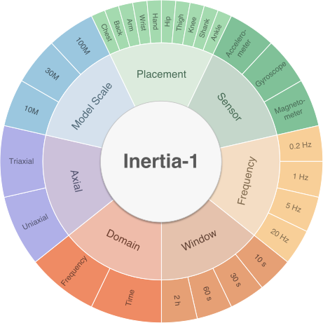
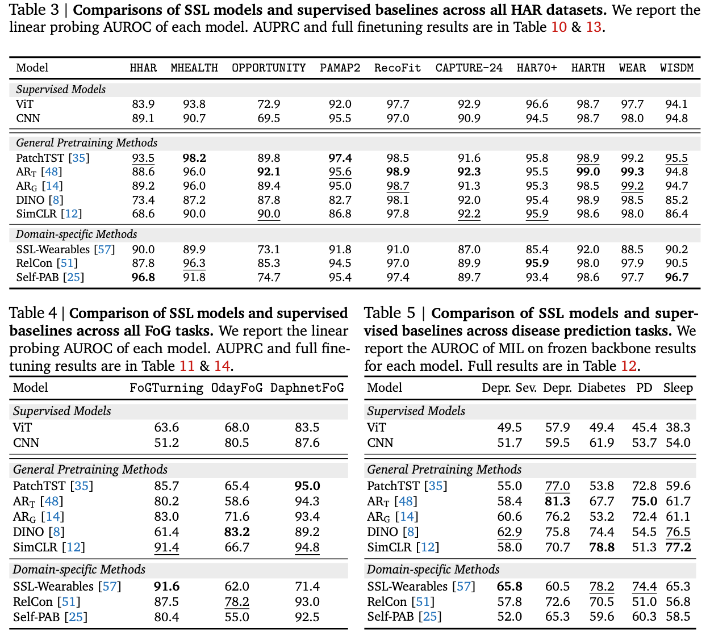
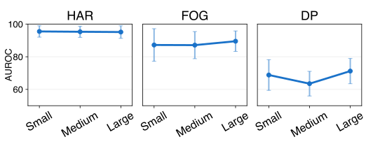
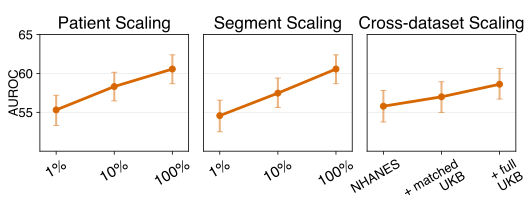
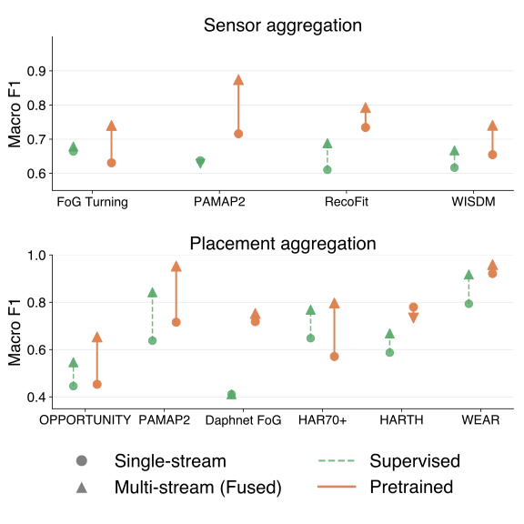
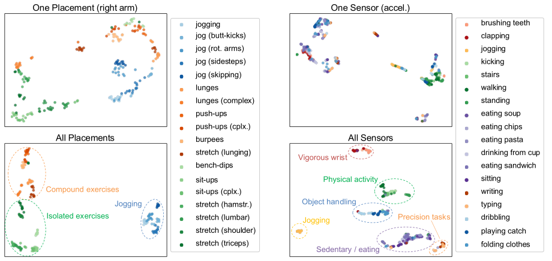

A controlled, fully open study of the full lifecycle of wearable motion foundation models — data, sensing, objectives, and scale — built into a practical cookbook for motion representation learning.
Wearable motion sensing is a natural fit for foundation models, yet its pretraining and scaling principles remain poorly understood.
Abstract. Wearable motion sensing provides a continuous and scalable window into human behavior and health, making it a natural fit for foundation models, yet its pretraining and scaling principles remain poorly understood. Prior work studies isolated design choices, such as sensor placement or sampling frequency, often under fixed settings and narrow downstream tasks that fail to capture real-world sensing diversity. We introduce Inertia-1, a fully open exploration of wearable motion foundation models. Using massive corpora of accelerometer data from global sources spanning more than 18.2M hours, we build a controlled framework for studying the full lifecycle of wearable motion foundation models, covering data choices such as sensor modality, device placement, sampling rate, and window length; model choices such as architectures and model size; and training choices such as pretraining objective and data scale.
Extensive evaluations across 15 datasets spanning human activity recognition, freezing-of-gait detection, and disease prediction reveal intriguing findings for building motion foundation models that generalize across tasks and sensing conditions. Collectively, Inertia-1 not only presents state-of-the-art recipes for diverse downstream tasks, but also serves as a comprehensive, practical, and open cookbook for wearable motion representation learning.
Why this is hard. The field is fragmented in layers: data pipelines differ in sampling rate, window length, sensor modality, body placement, and axis representation; methods differ in objective, architecture, and representation domain; datasets differ in scale and clinical context; and downstream evaluation spans activity recognition, gait analysis, and disease prediction. Large cohorts provide population-scale longitudinal data but often release compressed, downsampled, or vector-magnitude traces, while HAR and freezing-of-gait datasets offer high-frequency signals but are small in scale.
Our approach. Rather than proposing a single new architecture, Inertia-1 turns this fragmented landscape into a unified space of controlled exploration — treating motion foundation models as a joint problem over data, sensing configurations, pretraining algorithms, and downstream tasks, so the same pretrained representation can transfer from short-term activity recognition to long-term disease prediction.
Inertia-1 is an open, extensible framework built on four pillars, evaluated across a rigorous grid of sensing and scaling choices.
10 representative methods under shared training and evaluation settings, covering 5 classes of objectives — general self-supervised and motion-specific.
A rigorous grid over sampling rate, window length, sensor modality, axis dimensionality, and body placement.
To our knowledge the largest waveform-level wearable motion collection to date: 18.2M hours from 115,000+ people across 15 datasets.
10 human activity recognition datasets, 3 freezing-of-gait datasets, and 7 disease prediction tasks.
Learns transferable behavioral dynamics by forecasting upcoming motion patches.
Spans general and wearable-specific objectives built around motion augmentations and temporal structure.
Tests whether non-contrastive representation learning transfers to wearable motion.
Covers both time-domain and time–frequency reconstruction-style objectives.
Reference points to separate whether pretraining helps from which form of pretraining helps.
Short-term motion semantics — walking, sitting, running, household and exercise movements.
Transient, clinically meaningful disruptions in locomotion — subtle abnormalities beyond standard activities.
Long-term, population-level health modeling from longitudinal behavioral signatures.
Pretraining sources: NHANES (primary; raw high-frequency accelerometry from ~14,000 participants over multiple days) and the UK Biobank (100,000+ participants of large lower-resolution cohort data) for scaling studies.

With one unified framework, Inertia-1 reveals what makes wearable motion foundation models robust, transferable, and useful across real-world conditions.
Self-supervised pretraining consistently improves over supervised training from scratch, yet no single objective dominates across all task families and metrics.
Triaxial signals outperform magnitude summaries, while sampling rate and window length matter differently across task granularities.
More (and more diverse) pretraining data yields steadier gains than larger model sizes, and multi-sensor fusion drives strong gains in sensor-expansion settings.
Performance depends on the joint choice of data fidelity, sensing setup, objective, and scale — not any single recipe.
As the most diverse and unified testbed to date, Inertia-1 offers a practical foundation for studying, extending, and deploying wearable motion foundation models.
Under the default setting (20 Hz, 30 s, triaxial, pretrained on NHANES), self-supervised pretraining consistently outperforms supervised training from scratch across HAR, FoG, and disease prediction. Specialized or predictive objectives tend to be more robust for short-term recognition, while differences shrink for disease prediction. Crucially, the benefit of objective design grows with task specialization: SSL variance and gains are modest for HAR but widen sharply for FoG and disease.

Increasing encoder size alone (ART from 10M to 100M parameters) leaves linear-probe performance largely flat under a fixed corpus, and full finetuning can even degrade on small downstream datasets. Expanding the pretraining data is the more reliable lever: scaling the number of individuals, the number of segments per person, and mixing NHANES with UK Biobank all improve transfer. Scaling motion FMs is data-first, but not model-free — capacity must be matched to signal diversity and task structure.


Sensing choices are not secondary implementation details — they directly shape what motion FMs can transfer. Triaxial inputs consistently beat vector-magnitude summaries. Performance generally improves with sampling frequency, but pretrained representations stay competitive even at 1 Hz for HAR, while disease prediction benefits more from higher temporal resolution. Window length is task-dependent (30 s and 60 s are strong overall), and time-domain modeling better preserves gait and disease signals than frequency-domain reconstruction.
Wearable datasets often contain richer signals than a single wrist accelerometer. Fusing multiple synchronized streams — across sensor modalities and body placements — consistently improves performance, showing that different streams provide complementary rather than redundant information. A model pretrained only on wrist accelerometry transfers to unseen placements and modalities, and fusion produces better-separated activity clusters in the representation space.


@article{xu2026inertia1,
title = {Inertia-1: An Open Exploration of Wearable Motion Foundation Models},
author = {Xu, Zongzhe and Anand, Aakarsh and Jiang, Sarah and Zhuang, Chuntung and
Shuai, Zitao and Sankararaman, Sriram and Yang, Yuzhe},
journal = {arXiv preprint},
year = {2026}
}Acknowledgments: We gratefully acknowledge the support of Amazon Science Hub and UCLA DataX.